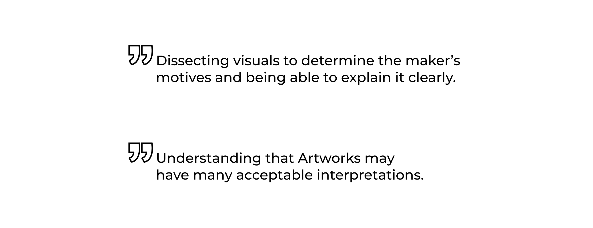
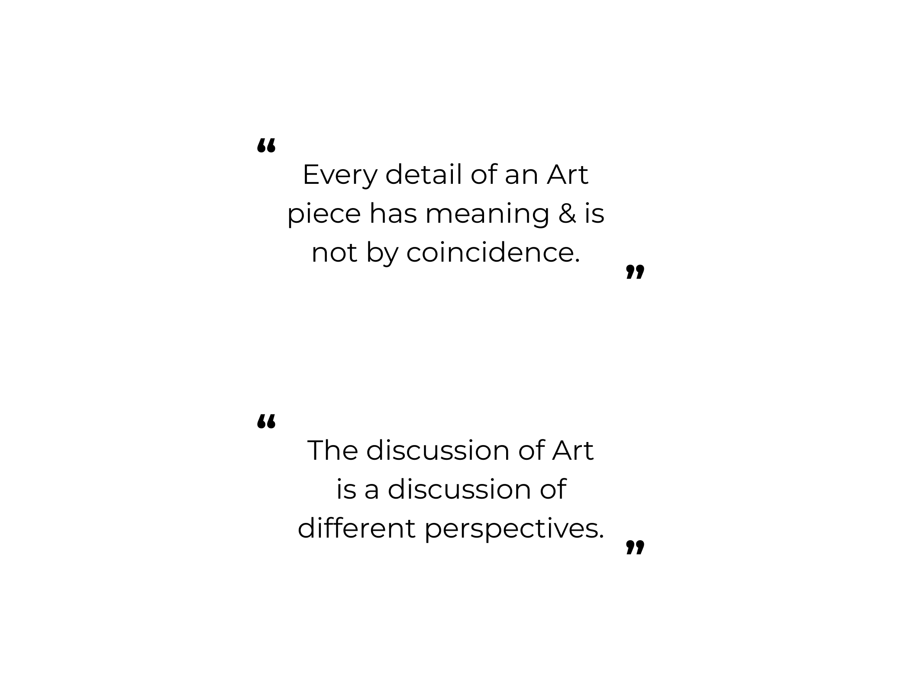
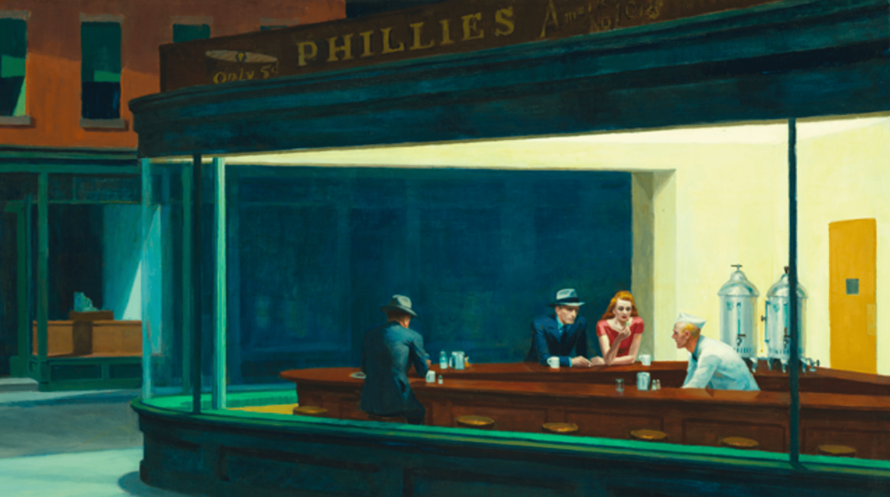
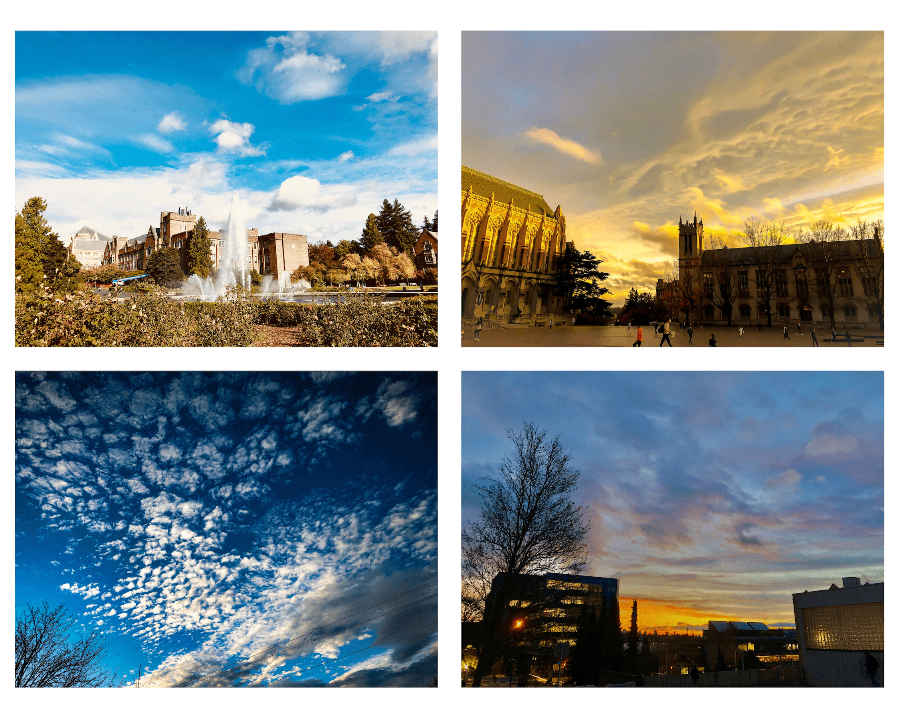

Wow, you clicked! Thanks for that! Now, the moment you have been waiting for! Who am I outside of designing? 🎉
🧑🎨 📖 I find Art History intriguing
I discovered my love of Art History when I was a freshman in college. I had to take an elective because I needed the credit, and the course that seemed to be a match was an Art History class.
I registered for it. I thought I wouldn't like it. I took it. Found out it was interesting in that it was like studying the lore behind an object. My Art History studies have taught me two things:
 My favorite art piece of all time
Edward Hopper, Nighthawks, 1942. Oil on Canvas. 33.1 in x 60.0 in. Art Institute of Chicago
Nighthawks resonates with me because it depicts America in a time of uncertainty and anxiety, two common feelings in this day and age.
The lack of physical contact with the people in the bar reinforces these feelings. The woman in red and the man sitting next to her may look like they are touching but are not. We know this because they mirror the two beer kegs, close but not touching.
📷 ☁️ Photographing clouds is rewarding
I specialize in cloud photography because of its natural beauty. Clouds come in various shapes and sizes. When sunlight hits at the right angles, clouds may take on a spectrum of colors between red and yellow.
Follow me on Instagram @casual_picture_taker for more clouds!
🎵 I Listen to '70s & '80s music
Songs from the '70s and '80s appeal to me because it is a time that I did not live in, and listening to songs from that era makes me wonder what it would have been like back then. Here are some of my favorites (in no particular order)!